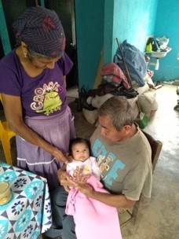

Narrativas sobre crianza
Cólicos Ihtikuakualolistli. Cuando un bebe/niño presenta cólicos, dolor de estómago se le puede dar un poco de té de manzanilla, se puede utilizar desde recién nacidos.
Textos en nahuatl

Audios
- Aprender a caminar 01
- Aprender a caminar 02
- Aprender a hablar a temprana edad
- Aprender a nadar
- Cólicos ihtikuakualolistli
- Crecimiento y desarrollo
- Dolor de oídos nakaskuahkualolistlih
- Llanto incontrolable
- Llanto incontrolable o enfermedades recurrentes
- Niños que no pueden hablar o mudos
- Prevención de caída de mollera al amamantar

Narrativas sobre embarazo
Narrativas sobre nacimiento
Narrativas sobre crienza
Nuestras parteras